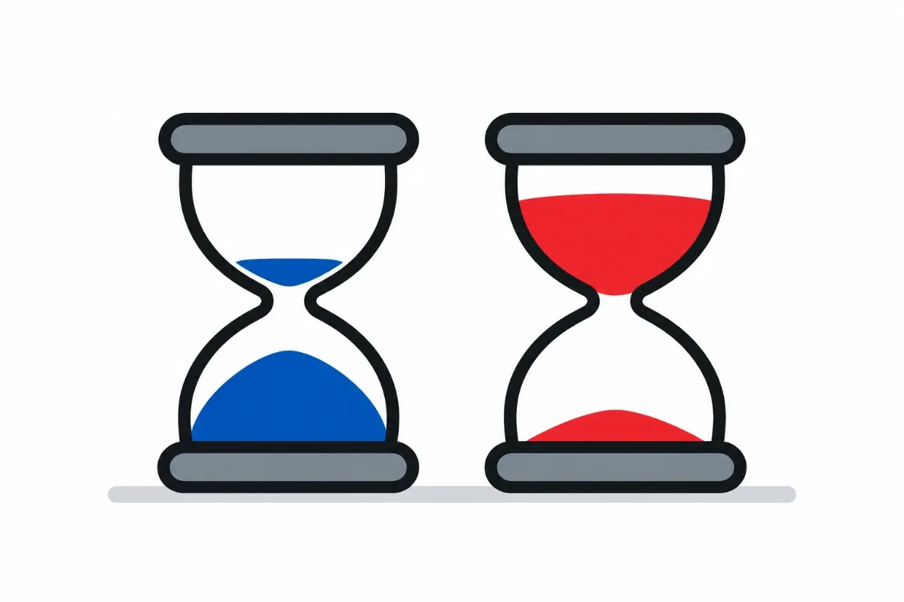

Prep time
Prep time is planning time between speeches.
- How much: each team gets one fixed amount for the whole round, often 8 or 10 minutes.
- How to use it: a team uses it before its own speeches, in any amounts it likes.
- The clock: when a team stops to prepare, the clock runs. When the speaker is ready, the clock stops.
- Running out: when a team has no prep time left, it must speak without more planning.
On this page
How prep time works
Prep time is a bank, not a set break before each speech. Each team starts the round with the same total. The team decides how to spend it. A team can use 30 seconds before one speech and 4 minutes before another.

The common national high school format gives each team 8 or 10 minutes for the round. Some leagues and novice divisions use other amounts. Check the tournament's rules, or ask the judge before the round starts.
Prep time is not the same as speech time or cross-ex time. Those are fixed for each speech. See Speeches, order and times.
When the clock runs
The usual practice is simple:
- The clock starts when a team says "We are taking prep," or when it is that team's turn to speak and it starts to prepare.
- The clock stops when the team says "Stop prep," or "We are ready."
- A team usually takes prep right before its own speech. It is rare to take prep before the other team's speech.
Many teams share their speech documents before each speech. A speech document is the file of cards (quoted evidence) they will read. Judges differ on how this counts. Some judges stop prep when the team says it is ready, and then let the team send the document. Others stop prep only when the document is sent. Many judges say which rule they use in their paradigm (a short note on how they judge). If you do not know, ask. See Speech docs and email chains.
Who keeps time. In most rounds the debaters time themselves and each other. The judge should also keep a record. Under most rules, if the teams disagree, the judge's record decides.
What teams do with prep
Prep is for planning the next speech. Teams use it to:
- choose which arguments to go for (keep pushing) and which to drop;
- put their answers in order and find the cards they need;
- write the opening lines of a rebuttal (one of the last four speeches), often the weighing: why their side matters more;
- talk with a partner about the plan for the speech.
Some leagues and judges let a team ask the other team questions during its prep. This is sometimes called using prep as extra cross-ex (question time). Others do not allow it. See Cross-examination.
How teams split their prep
There is no single right split. But a few patterns are common, because of how the speeches fall.
The affirmative often uses a little prep before the 2AC, more before the 1AR, and saves the most for the 2AR. The 1AR is short and must answer the whole negative block (the 2NC and 1NR, two neg speeches in a row), so it needs planning. The 2AR is the last speech, and good prep there can win the round.
The negative often uses little or no prep before the 2NC. The 1NR speaker can prepare during the 2NC and its cross-ex, without using the clock. Most neg teams save the largest share for the 2NR, because the 2NR must choose what to go for.
Before the 1AC, teams do not usually take prep. The 1AC is written before the round.
A team that runs out of prep early often gives a weaker last speech. Planning the split in advance helps. For more on the last speeches, see Rebuttal strategy.
Stealing prep
Stealing prep means preparing during a pause when your team was not entitled to prep, while the prep clock is stopped. It does not mean preparing during the other team's speech or cross-ex, which is normal. Examples:
- writing new arguments after saying "stop prep," while the document is being sent;
- a partner preparing the next speech during a pause that is not prep time, such as a long delay before cross-ex starts;
- taking a long time to "find a file" that is really planning.
Many judges see stealing prep as unfair, and some lower speaker points for it. Not every pause is stealing. Computer problems happen, and many judges stop the clock for a real technical problem. If you are a judge and you think a team is stealing prep, you can say so kindly: "Please stop prepping while the clock is off." Then note it in your comments.
For judges: tracking prep
- Ask before the round how much prep each team gets, and who is timing.
- Write each team's prep down after every use. A small table on the side of your flow works well.
- Say the time left out loud if a team asks, or if a team is close to zero.
- Do not add time. When a team runs out, the next speaker starts. Be kind, but be firm.
- Be consistent. Use the same rule for both teams, for example on when sending the document ends prep.
Example in flow shorthand
A judge's prep record for one round, with 8 minutes per team. Each row is the prep used right before that speech, then the time left. "-" means it was not that team's speech.
Before AFF NEG
used left used left
1NC - 8:00 0:30 7:30
2AC 1:00 7:00 - 7:30
2NC - 7:00 0:00 7:30
1NR - 7:00 0:00 7:30
1AR 3:00 4:00 - 7:30
2NR - 4:00 5:00 2:30
2AR 4:00 0:00 - 2:30How to read it: the aff saved its last 4 minutes for the 2AR and ended at 0:00; the neg saved 5 for the 2NR and ended with 2:30 unused.
Common mistakes
- Debaters: using too much prep early. Fix: plan your split before the round. Save the most for your last speech.
- Debaters: preparing after saying "stop prep." Fix: stop working when the clock stops. Send the document and stand up.
- Debaters: taking prep without saying so. Fix: say "Taking prep" out loud, so everyone can start the clock.
- Judges: not tracking prep. Fix: keep a small table on your flow and update it after every use.
- Judges: different rules for each team. Fix: decide one rule for document sending and use it for both teams.
- Judges: adding time when a team runs out. Fix: when prep is gone, the next speech starts. Stop the clock only for real technical problems.
Related pages
- Speeches, order and times: the order of speeches and where prep fits.
- Debate 101: the big picture of a round.
- Cross-examination: when prep can be used for questions.
- Speech docs and email chains: how sending documents affects prep.
- Rebuttal strategy: why teams save prep for the last speeches.